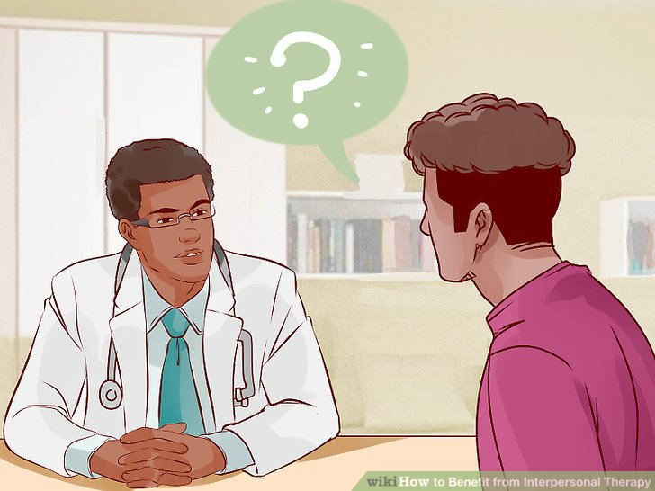
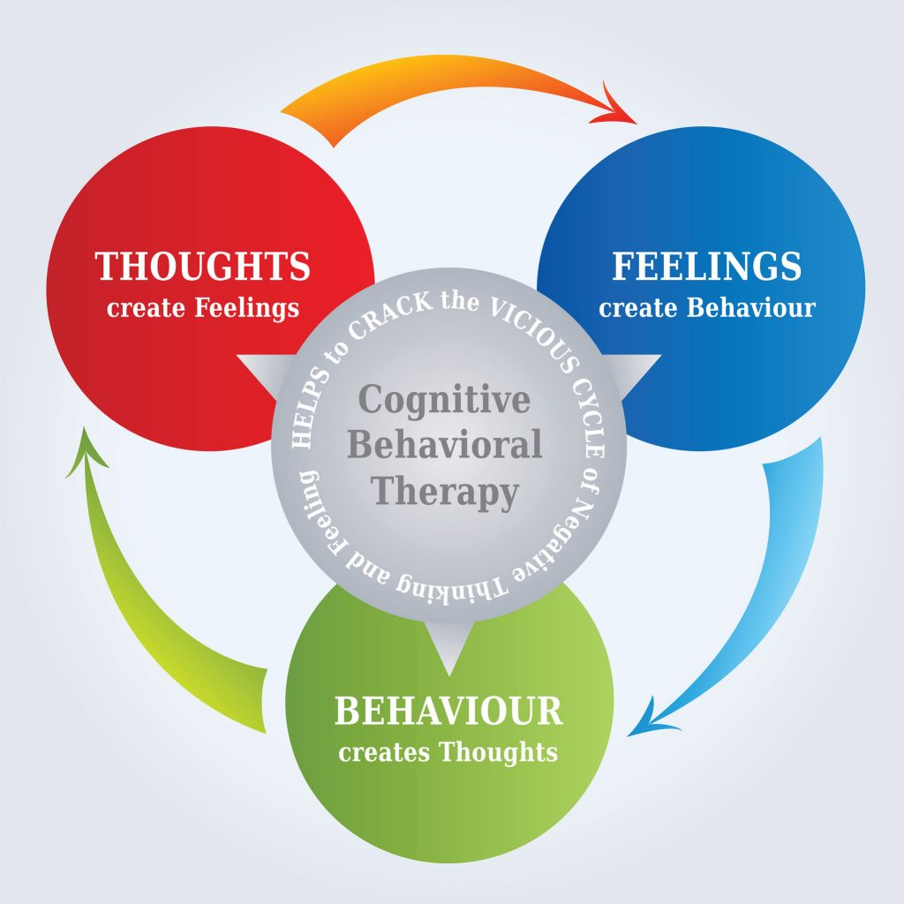
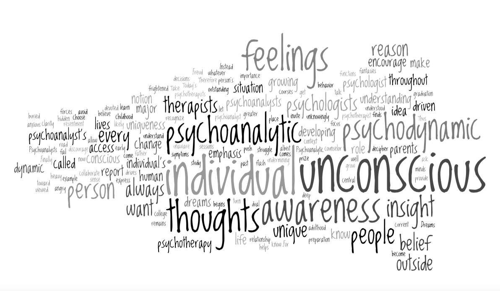

Types of Therapy
Hypotherapy
Hypnosis is thought to work by altering our state of consciousness in such a way that the analytical left-hand side of the brain is turned off, while the non-analytical right-hand side is made more alert. The conscious control of the mind is inhibited, and the subconscious mind awoken. It is a guided way to help a perspn relax so they are able to slowly relieve there stress. It's also a therapy that helps break bad habits and stricly stays away from medication.
Interpersonal Therapy
This type of therapy focuses on strengthening and learning how to build relationships with your family and peers.Its an indivual talk therapy where you discuss your stress and weaknesses so sit could help one build there self esteem and strengthen there mental health.

Cognitive Behavorial Therapy
Cognitive behavioral therapy is a psycho-social intervention that aims to improve mental health. CBT focuses on challenging and changing unhelpful cognitive distortions and behaviors, improving emotional regulation, and the development of personal coping strategies that target solving current problems. Originally, it was designed to treat depression, but its uses have been expanded to include treatment of a number of mental health conditions, including anxiety. CBT is often used as an umbrella term referring to a number of cognitive and/or behaviour psychotherapies that treat defined psychopathologies using evidence-based techniques and strategies.

Psychodynamic Therapy
Psychodynamic psychotherapy is a form of depth psychology, the primary focus of which is to reveal the unconscious content of a client's psyche in an effort to alleviate psychic tension. In this way, it is similar to psychoanalysis. It also relies on the interpersonal relationship between client and therapist more than other forms of depth psychology.

Need more information about how therapy copes with stress or how stress is developed? Visit these websites below!

How can passion relieve stress?
Doing something you are passionate about is a good way to cope with stress. It distracts you from what you are doing, blocks some of your negative thinking, and allows you to focus on what you love doing.
Lists of Some Peoples Passion
~Excerise

Regular exercise may help ease depression and anxiety by: Releasing feel-good endorphins, natural cannabis-like brain chemicals (endogenous cannabinoids) and other natural brain chemicals that can enhance your sense of well-being. Taking your mind off worries so you can get away from the cycle of negative thoughts that feed depression and anxiety.
~Cooking
Psychologically, cooking is whats called behavioral activation. To put together a good meal, you have to be engaged and present. You need to taste, make snap judgments, add or subtract heat. You cant just stare out the window and think about your ex. Its a positive mindful activity filled with easy, achievable goals.
~Dancing
The scientific reason for why dance has the ability to act as a stress reliever stems from the idea that when the body feels good, the mind does too. Any type of physical activity releases the neurotransmitter, endorphins, which serve to alleviate stress. Endorphins are the bodys natural painkiller to reduce stress and improve the mind’s perception of the world.
~Singing

Older people had reduced levels of the stress hormone cortisol in their saliva after singing, as well as improved mood and less tension. Changes in such markers are temporary, however, and may mean little in terms of health. Singing can also build up one's self esteem, alleviate loneliness, and make them confident to peform in public.
~Playing an Instrument
Playing an instrument forces you to take time away from the screen. With work, school, and socialising becoming increasingly reliant on technology, it seems we never take a step back and do an activity in the real world. Working with your hands, away from your phone or computer, is a perfect way to unwind.
Click on the picture to watch a TedX video on how Jus-Tina's passion relieve her stress throughout her years in high school.
Tokyo
Tokyo is the capital of Japan.